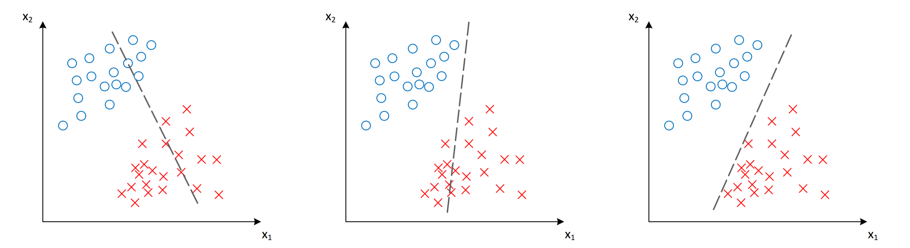
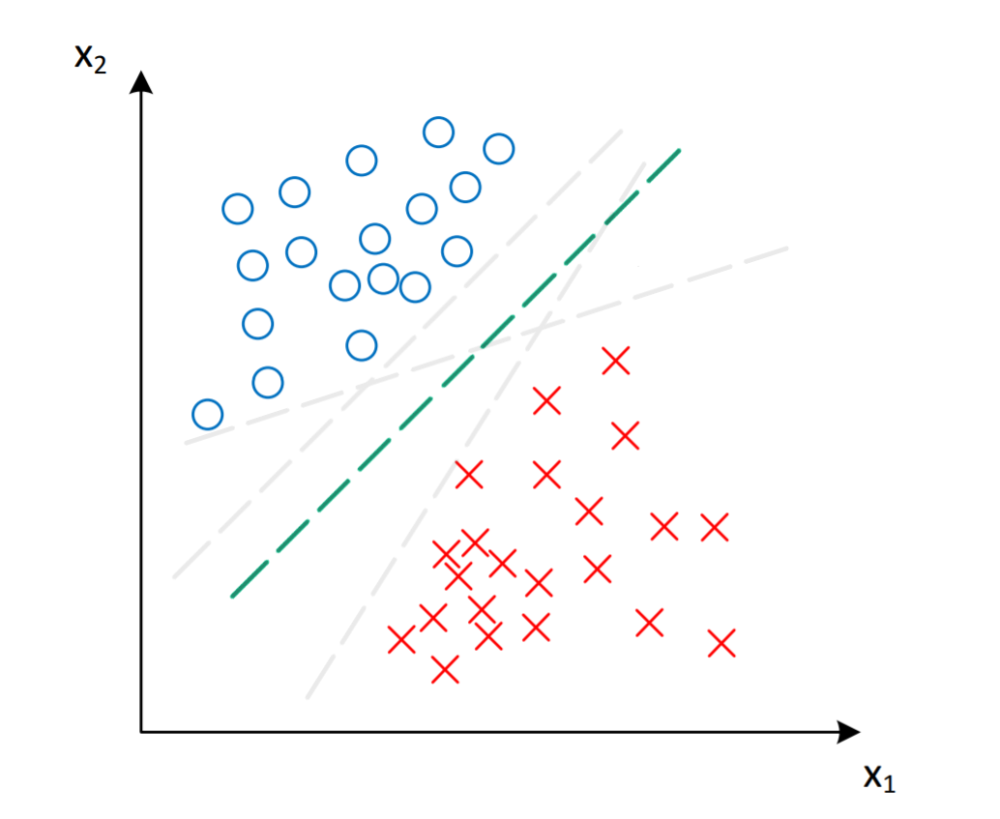
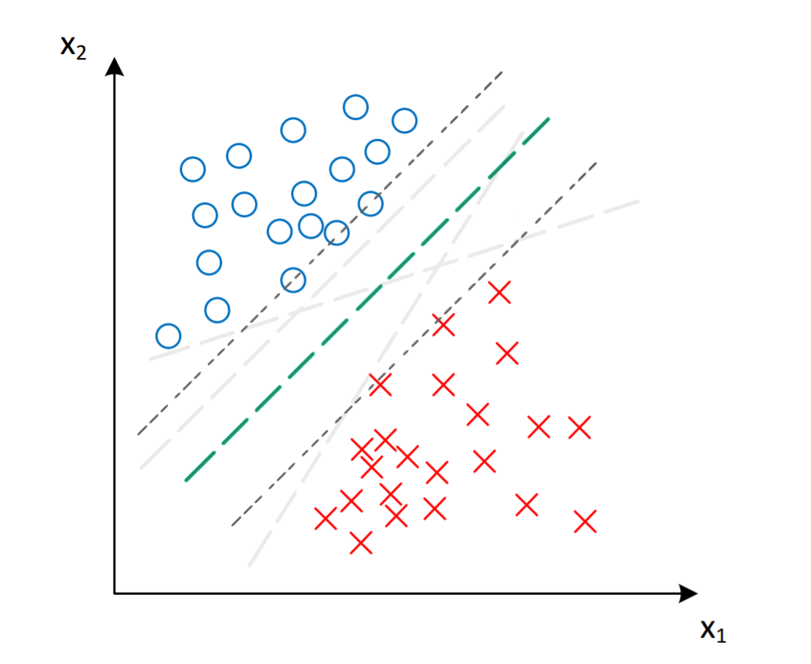
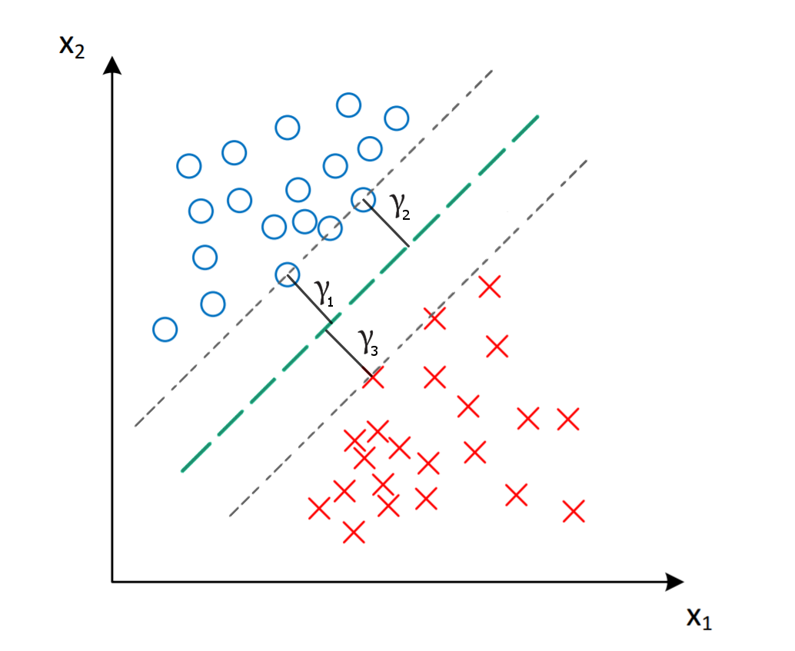
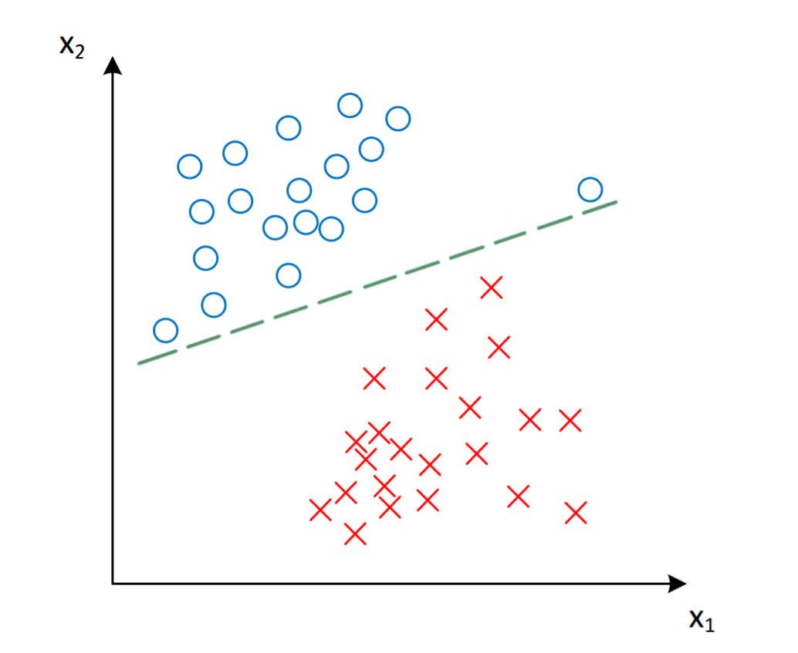
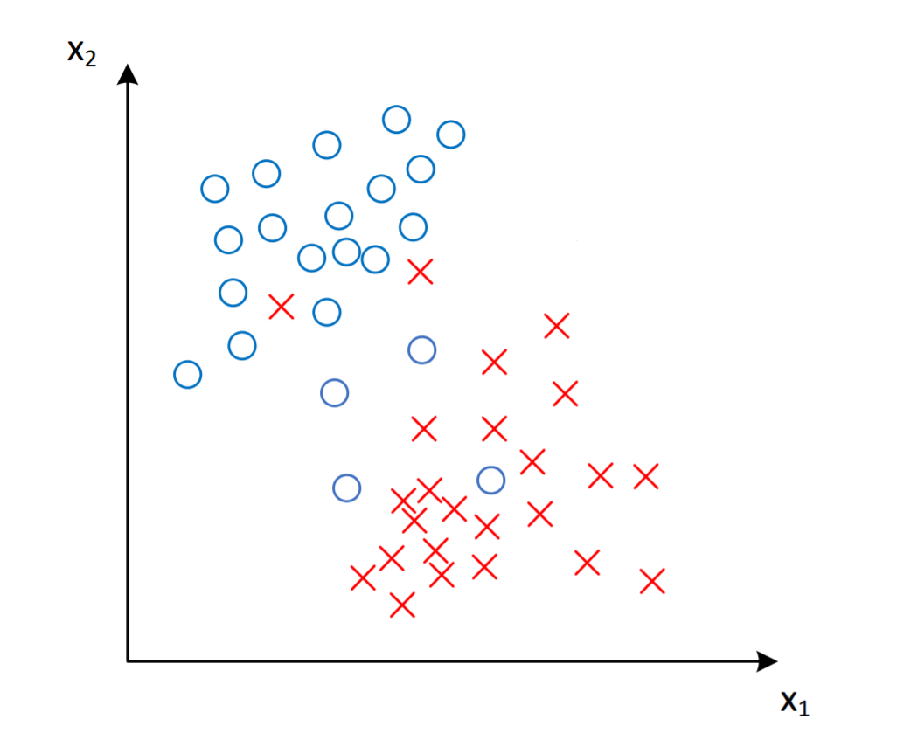

Support Vector Machines
The Problem
Let’s say we want to solve the housing selling problem.
I.e. using the set of features we want to predict whether house will be sold or not.
The features might be:
- House size (area)
- Number of rooms
- Year built
- etc.
Approach
One way to solve the broblem is to use
Logistic regression
How probably Logistic Regression will work
Is it good for us?
Intuition
The SVM
Definitions
Gamma +1
Gamma -1
We optimize SVM such that γ is ≥ 1
Support Vectors
Objective
Constraints:
Objective as minimization
Constraints:
Hard-margin
Outliers
Data is linearly inseparable
Introducing C term
The error will be represented by simbol ξ.
The value of ξ is the distance of x from the corresponding class’s margin.
C is the trade-off between maximizing the margin and minimizing the mistakes
C is small - errors are less important
C is large - we avoid mistakes as much as possible
Objective
Constraints:
Soft-margin
Non-linear cases
Replace with
Similarity function
Similarity function
A measure how two points close to each other.
Let features be:
f1 = how close to landmark 1
f2 = how close to landmark 2
f3 = how close to landmark 3
How to choose landmarks
Usually the strategy is to make each sample in train set as a landmark.
As a result SVM will have number of features equal to number of samples.
Kernels
The similarity functions are called Kernels
Gaussian Kernel
Other Kernels
Linear
Polynomial
rbf
Sigmoid
Bias\variance tradeoff
C
Large C: lower bias, high variance
Small C: Higher bias, lower variance
Large Sigma
Features vary more smoothly
Higher bias, lower variance
Small Sigma
Features vary less smoothly
Lower bias, higher variance
Gaussian kernel usage
If x1=1000 and x2=5, x1 will suppress x2
Apply feature scaling
Practical Guide to SVM
- Procedure
- Data Processing
- Model Selection
- etc.
References
Cheers!